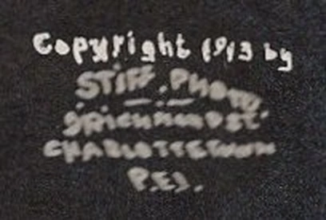
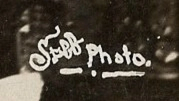

PEI’s Greatest Postcards – #7 – The Night St. Dunstan’s Burned
At half past two on the morning of March 8, 1913, both spires of St. Dunstan’s Cathedral still stood over Great George Street. On my copy of Stiff’s photograph you have to look hard to trace their outlines. The fire shines through the long windows. At the lower right, against the light, you can just make out the people watching. The next postcard in the sequence tells us what happened to one of those towers twenty-five minutes later.

Only six years earlier the parish had opened this stone cathedral after a decade of building. A card mailed in October 1907 shows the bishop’s palace alongside it and the two finished spires rising almost to the top edge. The fire came on a Friday night in Lent, passing midnight into Saturday. The little line of white lettering below each of Stiff’s photographs lets us follow what happened after that. The cathedral in 1907, card 1126 · The parish’s history of its churches
Twenty-five minutes between photographs
I have two copies of the 2:30 view. Card 1691 went from Georgetown to Wolfville in September 1913, carrying a note to a sister who was reminded that the Charlottetown exhibition was only about a week away. Card 4012 went farther. It was mailed from Pictou in 1914 to Ash, near Canterbury in England, with a promise of a long letter next week. The Pictou writer tells the recipient that they have just arrived there. It is an ordinary piece of travel news on an extraordinary picture. Both writers made this dramatic Charlottetown view a carrier for ordinary news from elsewhere. The Georgetown copy, card 1691

At 2:55 the wording on the card itself marks the fall of the top of the south tower. At three o’clock Stiff recorded the Sydney Street side. By turning from the 2:30 front to this view along the building, you can see how much of the church was alight behind that familiar façade. In May a sender told Mary Mason that it had been a grand church and she ought to see it now. The very next question was how Mary made sauce for the goose. I like Mary’s card for keeping both thoughts together. The three o’clock photograph and the message to Mary, card 4010

Who was Stiff Photo?
Before going on to the daylight views, look again at 4012, just above the caption on the right. I spent a long time wondering about those two words, Stiff Photo. I knew of Charlottetown photographers such as J. A. S. Bayer, but I had never been able to place a photographer named Stiff. Somebody suggested it might have been a grim little joke about the cold. It was cold enough. Charlottetown’s weather station recorded a low of −18.9 °C that Saturday, about two below zero Fahrenheit. Even the day’s high was only −8.9 °C. Those are the daily extremes. The pictures give us four times on a clock that morning. The weather record gives us a freezing day, without a separate reading for the instant each shutter opened. Charlottetown’s daily weather observations for March 7–9, 1913.

What settled the name was a photograph in London. The British Library holds a print of this same front-and-side view. Its catalogue gives the time, the date, the city and four words I had wanted to find for years: “Photographer: Walter G. Stiff.” The print is part of a collection that came through Canada’s Patent and Copyright Office. Someone looking for the photographer in a Charlottetown business directory could easily miss him. Look for the photograph itself, however, and his name is attached to it. The 2:30 deposit, HS85/10/26935.
There are four consecutive records, all naming Walter G. Stiff as photographer. The 2:30 print matches both 4012 and 1691. The 2:55 south-side view matches 2830, the 3:00 Sydney Street view matches 4010, and the 7:00 photograph matches 3925. That accounts for five postcards on my table. Two more, 3433 and 3714, show the remaining steeple coming down on March 26. That subject carries its own Stiff Photo signature in a much more flowing hand. Altogether I can put his name to seven cards showing five distinct views. The other photographs of the ruins have to stand on their own evidence.
From Richmond Street to Cape Cod
Who was Walter? Two years after the fire, a W. G. Stiff advertised in the 1915 catalogue of the Provincetown Art Association in Massachusetts. He would develop and print your Kodak photographs within twenty-four hours. To find him, you needed only the directions “Over the Express Office.” An advertisement in a Provincetown school magazine many years later offers Kodak finishing, picture framing and, there in his own advertisement, photographic postcards. Here was someone who made a living doing exactly the sort of work that produced my card. Stiff’s 1915 advertisement, printed p. 10.
When he died in Provincetown on August 11, 1953, two days after his 77th birthday, the local paper supplied the rest of the name: Walter George Stiff. He had been born in Ottawa, gone to the United States as a boy and built up a photographic trade at the corner of Commercial and Gosnold streets. His neighbours knew him as an usher and treasurer at the Methodist church. And here is a detail that particularly pleases a collector whose first PEI postcard showed an Odd Fellows gathering. Walter was himself an Odd Fellow, a past noble grand of Marine Lodge No. 96. Provincetown Advocate, August 13, 1953, p. 5 · My Odd Fellows card.
Alice supplied the Island connection. Walter’s widow died three months later, and her obituary says quite plainly that she was born in Charlottetown. She was Alice Stentiford, daughter of Joseph and Mary Stuart Stentiford. The paper identifies her late husband as the Cape End photographer. An uncommon surname and a matching initial had made the Provincetown man worth considering. His trade in photographic postcards and his wife’s connection to this particular town make Walter George Stiff, to my mind, almost certainly our man. “Mrs. Alice Stiff,” Provincetown Advocate, November 19, 1953, p. 6.
I still have one Charlottetown question. Was 9 Richmond Street Walter’s studio, a family home, or simply the address where an Islander could order a print? I haven’t found a local listing that settles that, or establishes how long he was here. I would look next for the occupant of the address in McAlpine’s 1914–15 Island directory. As for whether a photographer wished to conceal his part in covering a disaster, the surviving evidence points the other way. Whoever bought 4012 had a surname and a Richmond Street address printed on the picture.
Two photographers and one street
There actually is a Bayer photograph that belongs beside Stiff’s. Card 3908 is printed “Bishop’s Residence and Catholic Cathedral” and credited “Photo Bayer.” He stood far enough back on Great George Street to include the broad face of the residence, the church down the street, the utility poles between them and the tops of both spires. A second card mailed in 1907, 1126, shows the church before the fire. Turn that one over and a correspondent is trying to get a card to a friend whose Denver address they don’t have. Uncle J. is to take care of forwarding it. It’s one more glimpse of a time when a postcard of St. Dunstan’s was simply a handsome view to send a friend.
Side by side, the two photographers’ printed credits answer a narrower question than a business directory can. Bayer put his name on a daylight view of this street. Walter G. Stiff is the name attached to the four timed photographs in the British Library. Having a signed Bayer view is a useful comparison precisely because it allows both men to have their own photographs in the story. There is no need to put Bayer behind Stiff’s camera. Bayer’s view from Great George Street, 3908
Daylight on Great George Street
The untimed photographs bring us down into the street. On 3703, look above the heads of the crowd. Two people are perched on the crossarm of the utility pole at the right and a third is partway up the pole at the left. On 3713, people pick their way along the foot of the wall. You can see daylight through one row of arched windows and then through another above it. Florie sent her own account with the Great George Street view on 1919. “Nothing but broken stones to be seen inside,” she wrote. The card to Rosa with the open windows was still passing through the mail in June 1916. The smoking ruins, 3703 · Rosa’s card, 3713 · Florie’s view, 1919

The spire that lasted eighteen days

The March 26 photograph carries Stiff’s mark and gives the time as 4:40 in the afternoon. The camera caught the tip out over the open church, with a line hanging in a curve from it. On the back of 3433, mailed to Edmonton on April 1, someone wrote, “Some fire, believe me.” My other copy went to Ontario in May. Katie used the space to catch up with a friend about missing mail, the improving weather and the outings she was looking forward to. Katie’s copy of the steeple coming down, card 3714

Those walls turned out to be worth keeping. The parishioners worshipped for a time in the restored basement while the work went on above them. The builders followed François-Xavier Berlinguet’s earlier exterior design and architect J. M. Hunter redesigned the interior. The rebuilt cathedral was completed in 1919 and became a basilica in 1929. Go back to 4012 after looking at the later views. The pointed stone openings lit from within are part of what Charlottetown managed to save. Parks Canada on the surviving walls and the rebuilding
What was built inside the walls
A visitor looking through cards filed under “Interior of St. Dunstan’s Cathedral” can easily turn up two quite different interiors. Open 1260 and look down the centre aisle at the comparatively plain wall above the columns. Now open 2220. The arches rise in stages, the ribs of the vault stand out against the ceiling and a large circular window shows high above the sanctuary. You could be looking at two entirely different churches, although both cards carry much the same title. The earlier-looking view was already in the mail in 1913. The second version was sent to Waterville, Maine, in September 1926. Those are dates of use. The architecture and the history of the rebuilding are what make the comparison possible. The earlier interior · The view sent to Maine

Hunter has left a detail one can follow even in a small photograph. Look straight up the middle of the later church, above the aisle. The ribs meet in repeating patterns. Parks Canada describes eight-pointed stars along the crown of that vault and records the change from Berlinguet’s French Gothic design toward an English Gothic interior. From Great George Street a parishioner could recognize the rebuilt towers. From a pew there was a new ceiling to learn by heart.
The diocesan account mentions two less visible changes. Insurance money helped pay for the rebuilding, and the sacristy moved from the basement to the end of the church. That last detail accounts for the parish’s description of the finished building as a little larger than the one lost in 1913. The succession of postcards can show us the fall of a spire within minutes. To find out what happened to the room where vestments and church vessels were kept, one has to listen to the people who used the building afterwards.
On another copy of that later interior, 2166, someone added six words and underlined the last one. “Our Church is a Basilica now.” The printed face still calls it a cathedral. Since the basilica designation came in 1929, that little word dates the message in a way that a stamp never could on this unmailed copy. It also gives the story a different ending from a picture of the last spire falling. Stiff put the hour and the minute of a loss on his photographs. Somebody later wrote on the back of a postcard with pride in what the parish had again. The handwritten update, 2166